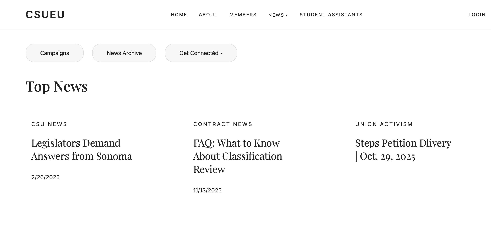

Union Website Mockup
A clean website mockup referencing CSUEU’s Top News — created for the CSUEU Union.

This page serves as a restylization of the CSUEU website, designed to mirror the aesthetic of a clean, accessible brand. It reflects concepts of:
- Union engagement and member advocacy
- Workplace activism in higher education
- Transparency and communication within CSUEU
- Graphic restyling and UI modernization
- Consistent design language across project pages
It references the Steps Petition Delivery (Oct. 29, 2025) news item and is visually aligned with the rest of my project previews. Its layout, typography, and spacing follow the same conventions as other user-acesible websites to maintain cohesion and polish.